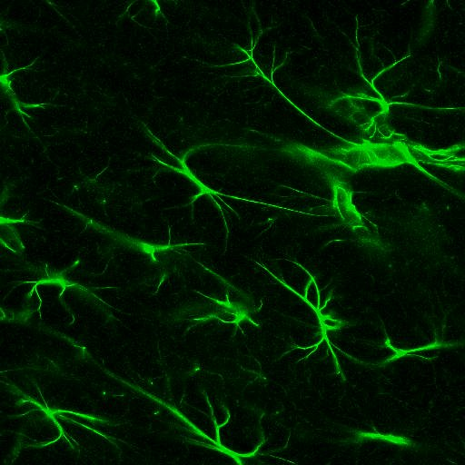
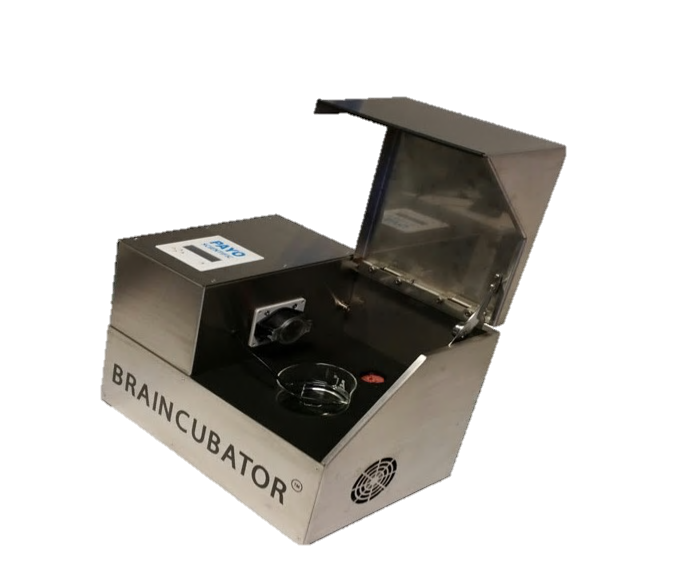
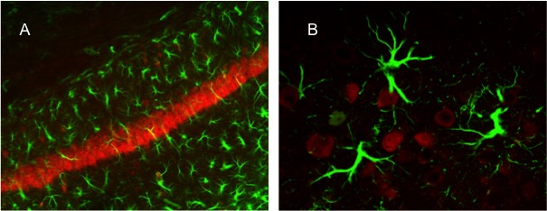
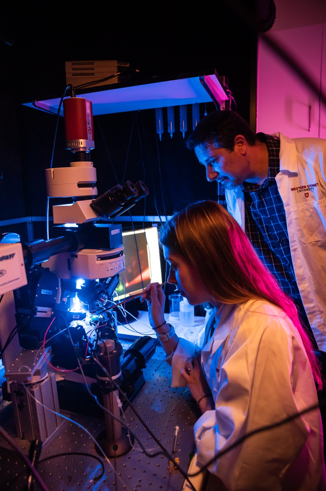

Neuronal excitability
How ion channels, intrinsic membrane properties and spike timing determine how neurons respond, adapt and encode information.
The Buskila Lab investigates how neurons, astrocytes and the extracellular environment work together to shape excitability, information processing and tissue resilience, and how these relationships change in ageing and neurodegenerative disease.



Brain function emerges from continuous communication between excitable neurons, supportive glial cells and the ionic environment surrounding them. Our work links these levels of organisation to understand why neural circuits operate reliably in health, how they compensate during stress, and why particular cells and networks become selectively vulnerable in disease.
We combine cellular electrophysiology, fluorescence imaging, tissue physiology and quantitative analysis in living brain preparations. By measuring membrane currents, action-potential timing, synaptic activity, astrocytic signalling and extracellular potassium regulation, we connect microscopic mechanisms with network-level physiology.
How ion channels, intrinsic membrane properties and spike timing determine how neurons respond, adapt and encode information.
How astrocytes regulate extracellular ions, influence synaptic and neuronal activity, and coordinate tissue homeostasis.

How chronic inflammation, altered potassium clearance and changing neuron–glia interactions contribute to ALS, Alzheimer’s disease and selective vulnerability.
How to preserve and study living neural tissue over longer periods, improving experimental access while reducing tissue waste.

Our experiments are designed to connect mechanism with function, from membrane currents in individual cells to physiological behaviour across intact tissue.
Recording ionic currents, membrane potential, action-potential firing and synaptic events in neurons and glial cells.
Visualising cellular morphology and dynamic signalling within neural tissue.
Maintaining organised circuits in a controlled environment to examine physiology across hours rather than isolated snapshots.
Testing how cellular and tissue-level mechanisms shift during ageing, inflammation and neurodegenerative progression.
The Braincubator was developed to extend the useful life of acute neural tissue by controlling temperature, pH and microbial contamination while preserving the tissue’s electrophysiological function.
This platform supports longer experimental windows, enables more data to be collected from each preparation and advances the ethical use of valuable neural tissue. The same principle creates opportunities to investigate short- and long-term physiological change within a stable living preparation.
See the Braincubator story
We welcome conversations with students, researchers and collaborators interested in cellular neurophysiology, neuron–glia interactions, neural tissue methods and the mechanisms that shape neurodegenerative disease.